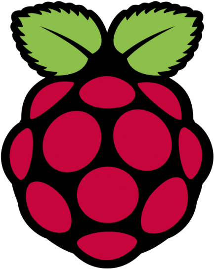
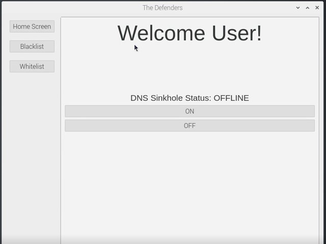

Goodbye Ads!
This is a DNS Sinkhole that is targeted towards ads. This requires "dnsmasq" and the pip package "dns-blackhole." dnsmasq is used to initially setup the DNS Server and is needed to be loaded with the configuration file. dns-blackhole is used to load the DNS Server with over 790,000 ad domains.
This will give the user the ability to block the majority of the ads from the start. The "main.py" file is used to control the DNS Server. It gives the user the ability to add domains to the DNS Server's blacklist and whitelist. It will also give the user the ability to turn the DNS Server on or off. This project needs to either be loaded on a Linux machine or a Raspberry Pi.
Technologies Used:
Python, PyQt5, dnsmasq, and Raspberry Pi
Github